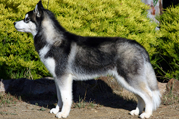
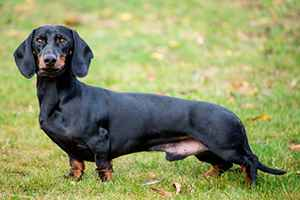
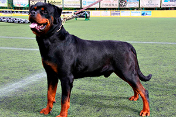

| порода | описание | фото | цена |
| Сибирский хаски | Сибирский хаски — заводская специализированная порода собак, выведенная чукчами северо-восточной части Сибири и зарегистрированная американскими кинологами в 1930-х годах как ездовая собака, полученная от аборигенных собак Дальнего Востока России, в основном из Анадыря, Колымы, Камчатки у местных оседлых приморских племён — юкагиров, кереков, азиатских эскимосов и приморских чукчей |  | 6000р. |
| Такса | Та́кса — порода охотничьих собак, отличающаяся короткими ногами. Существует несколько разновидностей такс, отличающихся размерами и весом — стандартные, миниатюрные и кроличьи. Также такс разделяют по шёрстному покрову на гладкошерстных, длинношёрстных и жесткошёрстных. |  | 9000р. |
| Ротвейлер | Ротве́йлер — немецкая порода собак, относящаяся к группе молоссов, сформированная в районе города Ротвайль и на берегах реки Неккар. Собаки этого типа являются одними из самых древних в Германии, их происхождение уходит к собакам Римской Империи. |  | 9900р. |